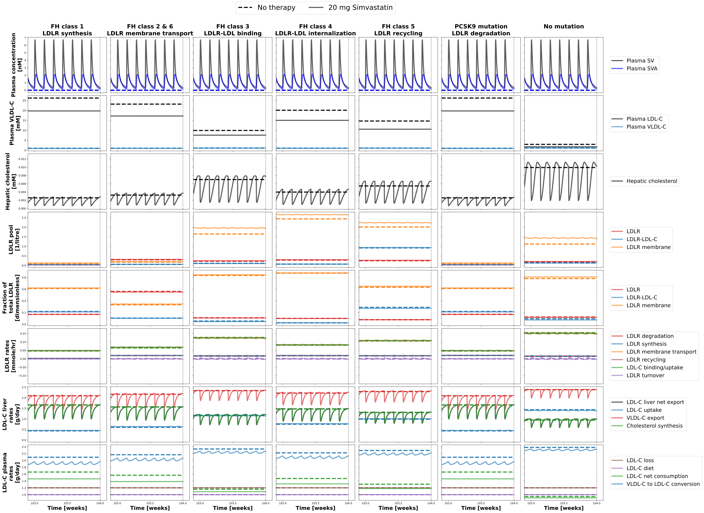

Overview
Models
| model | source |
|---|---|
| model | simvastatin_body_flat.xml |
Datasets
The experiment has no datasets.
Figures (2)



Code
"""Timecourses of simvastatin therapy for the FH types."""
from copy import deepcopy
from typing import ClassVar, TypedDict, override
import matplotlib.pyplot as plt
from matplotlib.figure import Figure as FigureMPL
from matplotlib.lines import Line2D
from pkpdsim.scan import state_after_changes
from sbmlsim import Q
from sbmlsim.data import Data
from sbmlsim.simulation import Change, Simulation
from sbmlsim.units import Quantity
from pkdb_models.models.simvastatin.experiments.base_experiment import (
DAY,
WEEK,
FontKwargs,
SimvastatinSimulationExperiment,
)
from pkdb_models.models.simvastatin.experiments.FH_experiments.readout_dict_FH_scans import (
DoseProtocol,
Readout,
axes,
readout_dict,
simvastatin_protocol,
time_FH_steadystate,
time_SV_treatment,
)
class FHTypeColumn(TypedDict):
"""A FH type and its column of the figures."""
dimension: str
title: str
label: str
n_column: int
fh_parameter: str
class FH_timecourses(SimvastatinSimulationExperiment):
"""Simulate timecourse of simvastatin therapy for different FH types.
The FH type changes its parameter by a factor 10 after 1 week, the steady
state of the FH type is followed by the daily doses of 20 mg simvastatin
(or none). The figures show the quantities of `readout_dict` over the
whole time and on the last day.
"""
#: the time to the steady state of the FH type and of the treatment [weeks]
time_FH_steadystate: ClassVar[int] = time_FH_steadystate
time_SV_treatment: ClassVar[int] = time_SV_treatment
simvastatin_protocol: ClassVar[dict[str, DoseProtocol]] = deepcopy(
simvastatin_protocol
)
readout_dict: ClassVar[dict[str, Readout]] = deepcopy(readout_dict)
axes: ClassVar[dict[str, int]] = deepcopy(axes)
@override
def data(self) -> dict[str, Data]:
# the 14 simulations of 36751 steps record only the quantities of the
# figures
self.add_selections_data(
selections=["time", *(self.readout_dict[key]["sid"] for key in self.axes)]
)
return {}
@override
def simulations(self) -> dict[str, Simulation]:
return {
**self.simulation_cho(),
}
def simulation_cho(self) -> dict[str, Simulation]:
"""Every FH type without and with 20 mg simvastatin daily."""
tcsims = {}
fh_change_f = 10 # change factor for FH type
fh_changes: dict[str, dict[str, Quantity]] = {
"control": {
"LI__SYNTHESIS_LDLR_Vmax_f": Q(1, "dimensionless"),
},
"FH_type1": {
"LI__SYNTHESIS_LDLR_Vmax_f": Q(1.0 / fh_change_f, "dimensionless"),
},
"FH_type2_6": {
"LI__LDLRMEMBRANE_Kcat_f": Q(1.0 / fh_change_f, "dimensionless")
},
"FH_type3": {
"LI__LDLRLDLCIMP_Km_f": Q(fh_change_f, "dimensionless"),
},
"FH_type4": {
"LI__LDLRLDLCIMP_Kcat_f": Q(1.0 / fh_change_f, "dimensionless"),
},
"FH_type5": {
"LI__LDLRRECYCLING_Kcat_f": Q(1.0 / fh_change_f, "dimensionless"),
},
"PCSK9": {
"LI__DEGRADATION_LDLR_Vmax_f": Q(fh_change_f, "dimensionless"),
},
}
# vary the FH type
for fh_key in fh_changes:
# vary the simvastatin dose
for simva_key in self.simvastatin_protocol:
if simva_key in ["control", "20 mg"]:
simva_info = self.simvastatin_protocol[simva_key]
# steady state of the FH type from 7 days, then daily doses
start = WEEK + self.time_FH_steadystate * WEEK
number = 7 * self.time_SV_treatment
tcsims[self.to_sid(f"{fh_key}_{simva_key}")] = self.presim(
end=start + number * DAY,
dt=DAY / 50,
changes=[
Change(WEEK, fh_changes[fh_key]),
self.doses(
Q(simva_info["dose"], "mg"), number, start=start
),
],
ldlc=3,
time_shift=-7 * 24 * 60,
# one simulation in a run over the draws of the
# fitted parameters: the draws would multiply the
# 14 simulations of two years
preinit_changes=self.fitted_changes(),
)
return tcsims
#: the FH types and their columns of the figures
fh_type_columns: ClassVar[dict[str, FHTypeColumn]] = {
"control": {
"dimension": "dim_control",
"title": "No mutation\n",
"label": "No therapy",
"n_column": 6,
"fh_parameter": "LI__SYNTHESIS_LDLR_Vmax_f",
},
"FH_type1": {
"dimension": "dim_fh_type1",
"title": "FH class 1\nLDLR synthesis",
"label": "LDLR synthesis",
"n_column": 0,
"fh_parameter": "LI__SYNTHESIS_LDLR_Vmax_f",
},
"FH_type2_6": {
"dimension": "dim_fh_type2_6",
"title": "FH class 2 & 6\nLDLR membrane transport",
"label": "LDLR membrane transport",
"n_column": 1,
"fh_parameter": "LI__LDLRMEMBRANE_Kcat_f",
},
"FH_type3": {
"dimension": "dim_fh_type3",
"title": "FH class 3\nLDLR-LDL binding",
"label": "LDLR-LDL binding",
"n_column": 2,
"fh_parameter": "LI__LDLRLDLCIMP_Km_f",
},
"FH_type4": {
"dimension": "dim_fh_type4",
"title": "FH class 4\nLDLR-LDL internalization",
"label": "LDLR-LDL internalization",
"n_column": 3,
"fh_parameter": "LI__LDLRLDLCIMP_Kcat_f",
},
"FH_type5": {
"dimension": "dim_fh_type5",
"title": "FH class 5\nLDLR recycling",
"label": "LDLR recycling",
"n_column": 4,
"fh_parameter": "LI__LDLRRECYCLING_Kcat_f",
},
"PCSK9": {
"dimension": "dim_PCSK9",
"title": "PCSK9 mutation\nLDLR degradation",
"label": "LDLR degradation",
"n_column": 5,
"fh_parameter": "LI__DEGRADATION_LDLR_Vmax_f",
},
}
@override
def figures_mpl(self) -> dict[str, FigureMPL]:
return {**self.figure_mpl1()}
def figure_mpl1(self) -> dict[str, FigureMPL]:
"""The quantities of `readout_dict` over the whole time and the last day."""
kwargs: FontKwargs = {"weight": "bold", "size": 20}
title_kwargs: FontKwargs = {"weight": "bold", "size": 22}
figures: dict[str, FigureMPL] = {}
for time in [None, 24 * 60]:
plt.autoscale(True)
fig2, axs_fig2 = plt.subplots(
nrows=8, ncols=7, figsize=(38, 28), sharex="col", sharey="row"
)
fig2.subplots_adjust(
hspace=0.05, wspace=0.05, bottom=0.05, top=0.925, left=0.05, right=0.85
)
for k in range(7):
axs_fig2[7, k].set_xlabel("Time [weeks]", **kwargs)
for fh_type_key, fh_type_value in self.fh_type_columns.items():
ax_column = fh_type_value["n_column"]
axs_fig2[0, ax_column].set_title(fh_type_value["title"], **title_kwargs)
for (
simvastatin_dict_key,
simvastatin_dict_value,
) in self.simvastatin_protocol.items():
if simvastatin_dict_key not in ["control", "20 mg"]:
continue
task_id = f"task_{fh_type_key}_{simvastatin_dict_key}"
xres = state_after_changes(self.results[self.to_sid(task_id)])
for key_fig2, value_fig2 in self.axes.items():
ax_row = value_fig2
var_info = self.readout_dict[key_fig2]
axs_fig2[ax_row, 0].set_ylabel(
f"{var_info['y_label']}\n[{var_info['unit']}]", **kwargs
)
y = Q(xres[var_info["sid"]].values, var_info["model_unit"])
y = y.to(var_info["unit"])
x = Q(xres["time"].values, "min")
x = x.to("weeks") # convert minutes to weeks
label = (
var_info["label"]
if simvastatin_dict_key != "control"
else None
)
axs_fig2[ax_row, ax_column].plot(
x.magnitude,
y.magnitude,
label=label,
linestyle=simvastatin_dict_value["linestyle"],
linewidth=4,
color=var_info["color"],
alpha=simvastatin_dict_value["alpha"],
)
for column in range(7):
if time is not None:
axs_fig2[4, column].set_xlim([102.9, 104.1])
axs_fig2[4, column].set_xticks([103, 103.5, 104])
else:
axs_fig2[4, column].set_xlim([-5, 105])
# the legend of every row, right of its last column
for ax_row in self.axes.values():
axs_fig2[ax_row, 6].legend(
loc="center left",
bbox_to_anchor=(1.05, 0.5),
prop={"size": 20},
)
# custom legend for simvastatin dosing scheme
handles = []
for (
simvastatin_dict_key,
simvastatin_dict_value,
) in self.simvastatin_protocol.items():
if simvastatin_dict_key not in ["control", "20 mg"]:
continue
label = (
"No therapy"
if simvastatin_dict_key == "control"
else f"{simvastatin_dict_key} Simvastatin"
)
handles.append(
Line2D(
[],
[],
alpha=simvastatin_dict_value["alpha"],
color="black",
label=label,
linestyle=simvastatin_dict_value["linestyle"],
linewidth=4,
marker=None,
)
)
axs_fig2[0, 3].legend(
handles=handles,
ncol=len(handles),
loc="upper center",
bbox_to_anchor=(0.5, 1.7),
prop={"size": 26},
)
plt.autoscale(False)
line_kwargs = {"color": "gray", "linestyle": "dashed"}
for ax in list(axs_fig2.flatten()):
ax.axvline(0, **line_kwargs)
ax.axvline(52, **line_kwargs)
ax.axvline(104, **line_kwargs)
if time is None:
figures["FH_timecourses"] = fig2
else:
figures["FH_timecourses_last_day"] = fig2
return figures